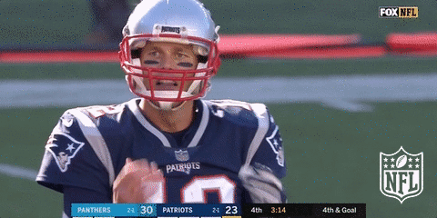

(se vio en 23.8 millones de hogares fuera de Estados Unidos, según cifras de Netflix),
ESPN anunció este jueves el lanzamiento de la serie de otro ícono del deporte.
“Man in the Arena: Tom Brady” es una serie de nueve episodios que se estrenará en 2021 y
“se centrará en el relato de primera mano de Brady sobre los momentos más emblemáticos de su
carrera en la NFL, incluidas sus nueve apariciones en el Super Bowl con los New England Patriots”,
reveló ESPN. “Además de los casos más pequeños,aparentemente insignificantes, que se convirtieron en
eventos fundamentales y allanaron el camino para el viaje de Brady”.
